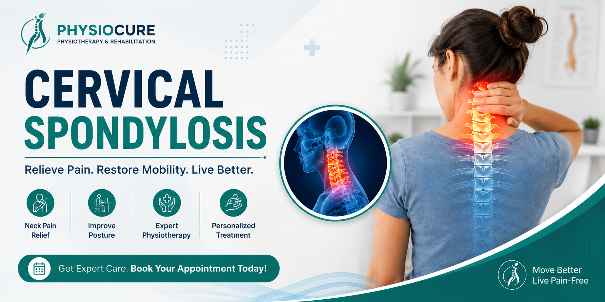

Cervical Spondylosis (Neck Pain)
Cervical Spondylosis is one of the most common causes of chronic neck pain, stiffness, headaches, and pain radiating into the shoulders and arms. With timely physiotherapy, posture correction, and specific exercises, most people can experience significant relief without surgery.

What is Cervical Spondylosis?
Cervical Spondylosis is an age-related wear and tear of the bones, discs, and joints of the neck (cervical spine). As the spinal discs gradually lose moisture and elasticity, the neck becomes stiff and painful. In some cases, the nerves may also become compressed, causing pain or numbness that travels down the arms.
Although it is more common after the age of 40, poor posture, prolonged computer work, and mobile phone usage have made it increasingly common among younger adults.
Common Symptoms
- Persistent neck pain
- Neck stiffness
- Pain while turning the head
- Headaches starting from the neck
- Pain radiating to the shoulders
- Numbness or tingling in the arms
- Weakness in the hands
- Muscle spasms
- Dizziness in some cases
Common Causes
- Age-related degeneration
- Poor sitting posture
- Long hours of computer work
- Excessive mobile phone usage
- Previous neck injury
- Sedentary lifestyle
- Occupational strain
- Disc degeneration
Risk Factors
- Age above 40 years
- Desk jobs
- Driving for long hours
- Lack of physical activity
- Smoking
- Obesity
- Previous neck trauma
How Physiotherapy Helps
Physiotherapy is one of the safest and most effective treatments for Cervical Spondylosis. A physiotherapist develops a personalized treatment plan to relieve pain, improve flexibility, strengthen muscles, and prevent recurrence.
- Pain management techniques
- Manual therapy
- Joint mobilization
- Neck stretching exercises
- Posture correction
- Strengthening exercises
- Ergonomic advice
- Home exercise program
Recommended Exercises
- Chin Tucks
- Neck Rotation Exercise
- Side Neck Stretch
- Shoulder Blade Squeezes
- Upper Trapezius Stretch
- Levator Scapulae Stretch
- Isometric Neck Exercises
Perform these exercises only after consulting a qualified physiotherapist to avoid worsening your symptoms.
Prevention Tips
- Maintain proper posture while sitting.
- Keep your computer screen at eye level.
- Avoid looking down at your phone for long periods.
- Take frequent breaks while working.
- Sleep with a supportive pillow.
- Exercise regularly.
- Strengthen your neck and shoulder muscles.
🛒 Recommended Neck Care Products
We have selected a few products that may be useful for neck support, home exercise and everyday comfort. Please consult a qualified physiotherapist before using any exercise or support product, particularly if you have pain, numbness or weakness.
Affiliate Disclosure: As an Amazon Associate I earn from qualifying purchases.
🛒 View Recommended Products on AmazonWhen Should You Visit a Physiotherapist?
Seek professional physiotherapy if you experience:
- Neck pain lasting more than one week.
- Pain spreading into the shoulders or arms.
- Numbness or tingling.
- Difficulty turning your head.
- Frequent headaches related to neck pain.
Frequently Asked Questions
Can Cervical Spondylosis be cured?
While age-related changes cannot be completely reversed, physiotherapy can effectively reduce pain, improve movement, and help you lead a normal life.
Is surgery necessary?
Most patients improve with conservative treatment such as physiotherapy, posture correction, and exercises. Surgery is required only in severe cases.
Can mobile phone usage cause neck pain?
Yes. Prolonged bending of the neck while using a mobile phone can contribute to neck strain and Cervical Spondylosis symptoms.
Which pillow is best for neck pain?
A medium-firm cervical support pillow that keeps your neck in a neutral position is generally recommended.
Looking for Neck Pain Relief?
Our experienced physiotherapists provide personalized treatment plans for Cervical Spondylosis, neck pain, posture correction, and rehabilitation.
Contact Us